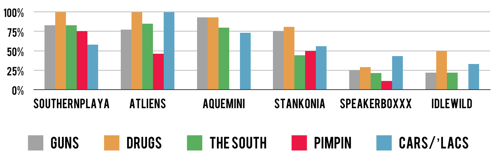

The birth of southern slang
As a fan of hip hop etymology, I looked for Outkast's role as potential inventors of slang. Turns out that there’s definitely a case for Outkast first-use of "crunk" and "skeet".
What I never realized is that this is consistent with Outkast’s position as the face of southern hip hop – "crunk" and "skeet" both originated from the south. Southern themes in hip hop are intimately connected to Outkast's legacy.
Here's why: before Outkast, southern hip hop was jokingly called “country s---” by east/west-coast constituencies. People began to take the South more seriously when Outkast won the ’95 Source award for best new group. During the acceptance speech, the east/west-coast’s lack of respect for the south revealed itself in the form of boos from the audience.
Big Boi paid tribute to New York and “all the original MCs,” but Andre decided to rant, "I’m tired of the close-minded folks. We got a demo tape and no one wants to hear it. But the south got something to say—that’s all I got to say."
Outkast's southern sound: ATL strip clubs, guitar riffs, and aliens
Beyond ATL slang, Outkast’s first four albums contain copious drawl and references to Atlanta (strip clubs, projects, neighborhoods, intersections, Cadillacs), creating a sound that was distinctly southern.
There are countless anecdotes that Atlanta was absolutely captivated by Outkast's early music. Their music was heard on every street-corner and from cars driving by. Intersections and businesses referenced in the songs gained popularity. There’s even evidence of Puff Daddy directing Playa’s Ball (Outkast’s first single in ’94) and bringing Kangol hats back to NYC.
Outkast's sound became even more distinct when they began producing their own music on ATLiens (their second album). These self-produced songs are about aliens, stars, and Nuwabian Nation—just about as far as you can get from the glorification of pimps, guns, and drugs (east/west-coast themes).
Rather than emulate the east/west-coast sound and image, Outkast brought a totally new approach to hip hop. From the beginning, Big Boi and Andre prided themselves on originality (hence the name, Outkast – to be different from the rest of the hip hop scene). “Skeet" and “crunk” were just part of what Outkast’s southern roots brought to hip hop.
Outkast are from East Point and went to Tri-Cities HS. Outkast became a staple for the south since their music frequently references neighboring communities, such as College Park and Decatur, or businesses, such as strip club Magic City.
The evolution of outkast's lyrical themes
With Outkast’s second album, their lyrics shifted to a completely new style, filled with positivity, non-violence, southern-life hardship, and guitar riffs. The next album (Aquemini) would take that even further, focusing on drug addiction, poverty, and morality.
While this helped Outkast create a distinctive sound, it also reflected the events in their lives. What makes Outkast unique isn’t just their role in Southern hip hop, but unparalleled longevity – 6 outstanding albums across 12 years – chronicling their evolution from kids to adults, players to fathers, and relationships to break ups.
Life events to listen for on Outkast's discography
Each album is filled with cues for what Andre and Big Boi were experiencing at the time of its production.
These events help explain the positive themes that begin on Outkast’s second album: Andre makes big personal changes, adopting veganism and leaving the drinking/drugs lifestyle. By Aquemini, he’s experimenting with new musical styles and growing tired of rapping.
'94

- Attempt to represent (and give respect to) the South
- 17-year-olds making it up as they go
- Create a new sound with P-Funk
'96

- Tension from the boos at '95 Source Awards
- Andre's with Erykah Badu, adopts veganism and explores Nuwaubian Nation
- Darker melodies from the death of Big's aunt/mother
'98

- Andre and Big Boi have kids
- Tension from breakup rumors
- Tension from Andre's rejection of gangsta lifestyle
- Andre's experimentation with singing
'00

- Andre-Erykah breakup (Ms. Jackson)
- Andre's tired of hip hop-- less rapping
Andre and Big Boi's creative approach

This is an obvious over-simplification and should convey Andre's movement away from hip hop – not Boi Boi lack of experimentation. In fact, Big Boi's recent solo work has taken several experimental directions, helping fans clearly identify his role on early Outkast tracks.
What’s seemingly overlooked is Andre and Big Boi’s creative genius despite an increasingly divergent approach to music. Or as Big Boi puts it, "two unique, individual styles meshed together to make one monster mayhem musical mashup.”
Andre is experimenting and growing beyond hip hop, yet Big Boi is perfectly content with maintaining the gangsta persona. Naturally, this creative tension leads to breakup rumors, a major theme represented on Aquemini. The two debate how long they can continue to make music together with such opposing styles, regardless of how ground-breaking the "musical mashup" is for hip hop.
The first time Andre started to croon and modulate his voice, there’s this anecdote from an interview:
The first time I did it, [Big] kinda pulled me to the side and said, ‘I just wanna let you know niggas in the street, they don’t be liking when you do your voice like that.’ But to me, in my head, I was like it sounds cool. Maybe I’m not transmitting it right but this is cool. So that really kinda gave me a push and I think my songwriting abilities were pushed in that way.
You hear this creative tension throughout Aquemini and Stankonia. When Outkast produced B.O.B., Big Boi worried that their base, hardcore hip hop fans in ATL’s hardest neighborhoods, would reject the heavy rock guitar riffs. Fortunately, the result was a net gain in fans who were traditionally non-hip-hop.
Andre and Big Boi’s creative differences tragically climax on Speakerboxxx, with Andre and Big Boi at their most distant (and coincidentally, height of popularity). If you’re an Outkast fan from the beginning, you see stylistic differences continue to compound. As early as Aquemini (‘98), they admitted that they would pursue solo works after their next album. After Idlewild's completion in ‘06, a hiatus is almost inevitable. When Andre says he’s tired of hip hop and rapping, the experiment ran its course.
This sheds light on the motivations for an Outkast reunion in 2014. It wasn't the reunion of two out-of-the-spotlight rappers. It’s wasn't an Outkast needs to get paid tour. It wasn't Andre and Big Boi failed at solo either. Andre and Big are interconnected souls, whose lives are documented across six albums. History suggests that the "reunion" was part of their plan, and it shouldn't be viewed as the reconciliation of a shocking break-up.
Effect on the trajectory of hip hop, pop music
When Outkast won a Grammy in ‘04 for Speakerboxxx, Andre lamented in the acceptance speech, "People thought our first album was Stankonia. It’s Southernplayalisticadillacmuzik." While Outkast was at their peak of popularity in '04, few people appreciated (or even knew of) their first three albums (that’s 10 years of Outkast music history).

In particular, Aquemini ('98) scored a perfect rating from the Source. At this point, Outkast's attempts to be unique achieved impressive results: a new sub-genre/sound (the dirty south) and ascendancy in hip hop.
While Andre may have felt that Outkast's previous work didn't get enough respect, Stankonia was a breakthrough moment for hip hop – full acceptance of the genre by the music establishment. It was a huge step away from traditional hip hop, borrowing heavily from George Clinton-Funk, jazz, blues, and rock. As Andre experimented with rock and Big Boi held onto his hardcore hip hop style, they had the ingredients to make their version of hip hop palatable to a mainstream audience and attract new fans to the genre.
This article was originally published on pudding.cool and reproduced for educational purposes only.